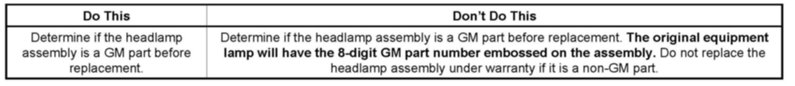
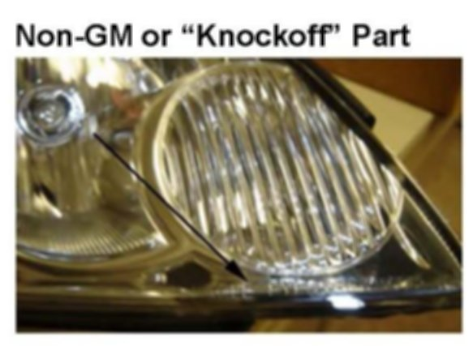

Lighting - Headlamp Warranty Replacement Guideline
INFORMATIONBulletin No.: 08-08-42-005B
Date: June 11, 2009
Subject: Replacement of Headlamp Assemblies Under Warranty and Use of GM vs. Non-GM Headlamp Assemblies
Models:
2010 and Prior GM Passenger Cars and Trucks (Including Saturn and Saab)
2010 and Prior HUMMER H2, H3
Supercede:
This bulletin is being revised to update parts identification and model years. Please discard Corporate Bulletin Number 08-08-42-005A (Section 08 - Body and Accessories).
This bulletin is being issued to inform dealers that whenever a headlamp replacement under warranty is necessary, be sure to use the correct General Motors (GM) approved headlamp assembly.
Recent Warranty Parts Center reviews of headlamps replaced in the field show that some dealers have returned non-GM (counterfeit) headlamp assemblies under warranty.

These non-GM headlamp assemblies (referred to as "knock-offs") are not made to GM specifications. Also, the appearance of these headlamp assemblies are very close to the genuine parts. Refer to the figures below.

The figure above shows a non-GM or "knockoff" headlamp assembly. The lens stamping will read "EAGLE EYES." There are other companies that manufacture replacement lamps that can be installed on a variety of GM vehicles.
These non-GM headlamp assemblies will not be honored under warranty. These are not original equipment and are not sanctioned as replacement parts by GM.

Disclaimer